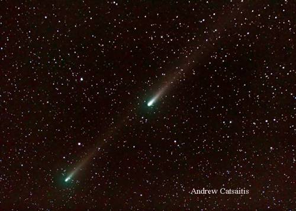
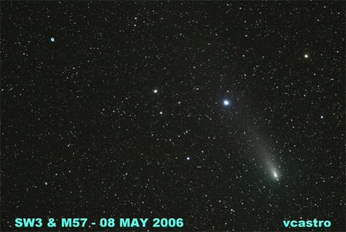
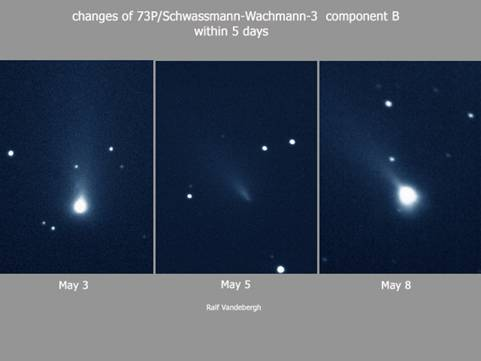

|
|
|  |
|
||||||||
 施瓦斯曼•瓦茨曼3號彗星（73P/Schwassmann-Wachmann 3）是太陽系的一顆週期彗星，編號73P，現時已分裂成多塊碎片。 這顆彗星被發現分裂成五塊大碎片並命名為73P-A到73P-E。地面觀測已記錄得65顆碎片，分別為B,C,G,H,J～N,P～Z,AA～AZ,BA～BS；根據亮暗順序，頭三顆為B（5等）、C（6等），C核和B核的光度預計可達4~5等，其它的為14等或更暗不適普通觀。 B核相對於其他彗核活躍得多，4月20日的一次分裂被台灣鹿林天文台拍攝到，4月24～25日的持續分裂並突然增亮過程（8.3等→7.9等）被多家天文台甚至美國和日本的天文愛好者拍攝到（碎片並隨著B核在後）。5月2日～4日曾有一次爆發並分裂被日本石垣島天文台拍攝到；5月8日的一次爆發並增亮一個星等至9日的4.5等（越過C核亮度）被美國史密松天文台與密執安大學拍攝到；至11日觀測已回落至比C核稍暗，至六月初已下降至7等以下，活躍度以大為降低。 這組彗星五月中旬經天鵝座、飛馬座、雙魚座至鯨魚座，並預計會於5月12日～17日分別接近地球，達1,200萬公里（C核，0.079 AU），成為20年來最接近地球的彗星，但其距離仍不致於威脅到地球。 此外在1930年它接近地球時，曾引發出現牧夫座流星群，其流星數目（ZHR值）達每分鐘100顆，不過直至5月25日預測極大日當晚也沒有觀測到驟增之流星群。

|
|
|||||||||||||||||||||||
網站製作人員：李佩芸、曾郁婷 更新日期：2010/9/02 |